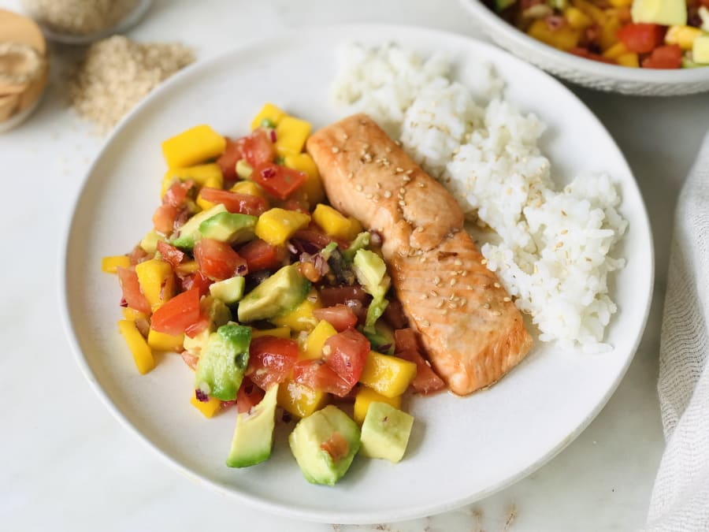

Salmon con arroz y ensalada de mango

¡Qué fácil es comer bien! Este plato está lleno de sabor, se hace en un
visto y no visto, y te va a dejar súper saciado. Una maravilla cuidarte
de esta forma.
Ingredientes
- Aguacate
- Cebolla morada
- Mango
- Tomate
- Zumo de limón
- Sal
- Aceite de oliva
- Arroz
- Salmón
Pasos
- Pela y corta el mango y el tomate en trozos pequeños. También corta la cebolla en trozos muy pequeños. Por último, corta el aguacate. Mezcla los ingredientes en un recipiente, exprime un chorrito de zumo de limón por encima, un poco de aceite y sal, y mezcla bien.
- En una sartén cocina a la plancha el salmón.
- En un plato coloca la ensalada de mango y aguacate, el salmón a la plancha y un poco de arroz cocido. ¡Listo!
Volver a Inicio